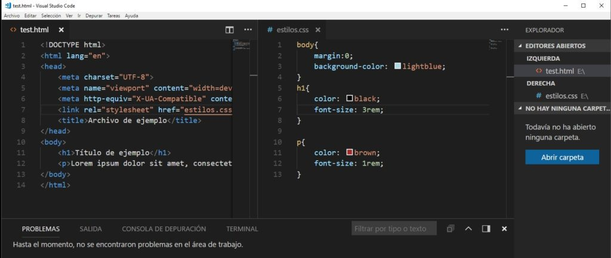

Visual Studio Code (VS Code) es un editor de código fuente ligero pero potente, conocido por su flexibilidad y gran variedad de características. Ofrece soporte para múltiples lenguajes de programación, personalización a través de extensiones, y herramientas integradas para el control de versiones con Git. Además, es ligero, rápido y altamente adaptable a las necesidades de cada desarrollador.
A continuación, se detallan algunas de las características más destacadas de VS Code:
VS Code es un editor ágil que consume pocos recursos, ideal para trabajar en proyectos de cualquier tamaño.
Los usuarios pueden adaptar el entorno de desarrollo a sus necesidades gracias a un amplio catálogo de extensiones, según el Instituto Profesional Providencia.